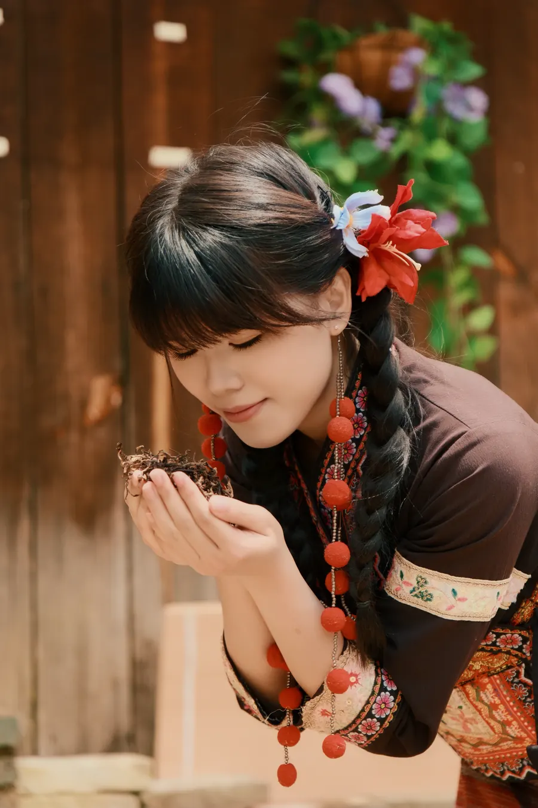
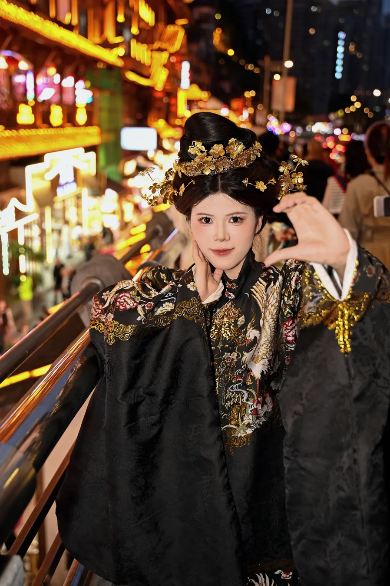
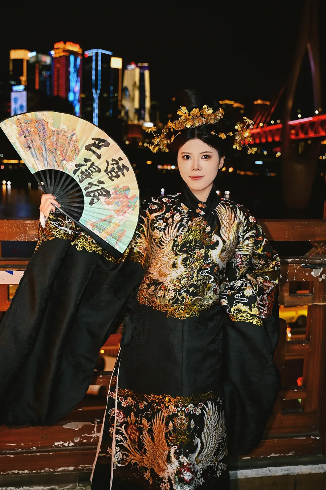
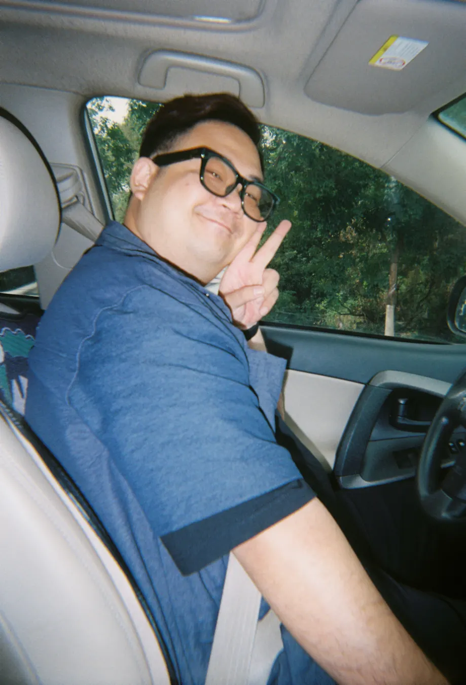
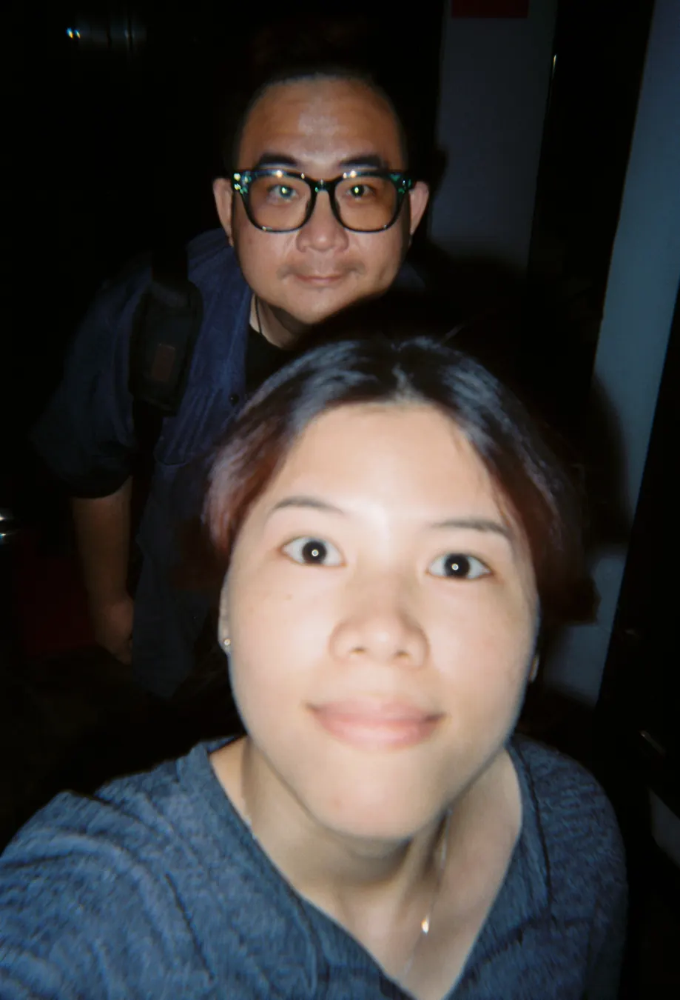
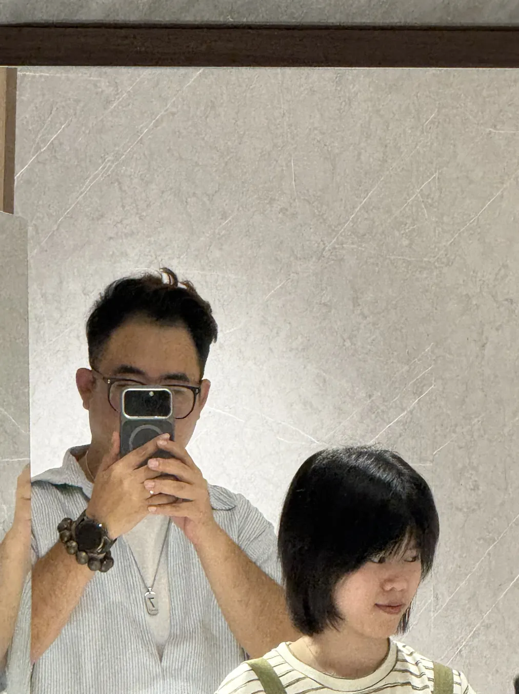
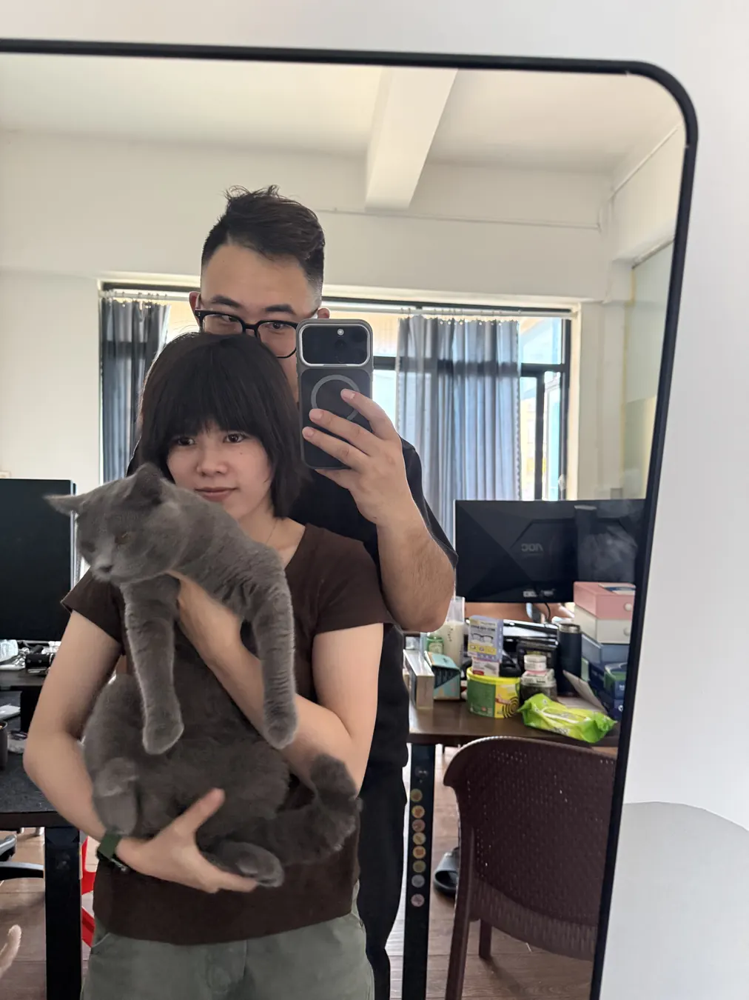

先听你说完
不急着辩解，也不把你的难过变成一场输赢。
会乖，会听话，会认真改。
这一页不催你回答，只想把心意好好放到你手里。

我眼里一直发光的人我知道，“不要推开我，不要丢下我”听起来有一点笨拙。真正想说的是：我很在乎你，也愿意学着更好地爱你。你的感受、边界和选择，我都会认真尊重。
左右滑动，是我舍不得忘记的你。

FRAME 01 · 可爱
FRAME 05 · 心动一小段会动的证据：我想和你，把普通日子继续拍下去。
点一下逐条盖章。这些不是拿来哄你的漂亮话，是我要慢慢做到的事。
不急着辩解，也不把你的难过变成一场输赢。
需要空间会说清楚，答应回来就会回来。
不只说“下次不会”，也会让改变真的发生。
在大事和小事里，都让你感到被放在心上。
协议确认进度：0 / 4




可以有旅行，可以有猫，可以只是一起发呆。
只要画面里还有我们，普通日子也会变成纪念日。